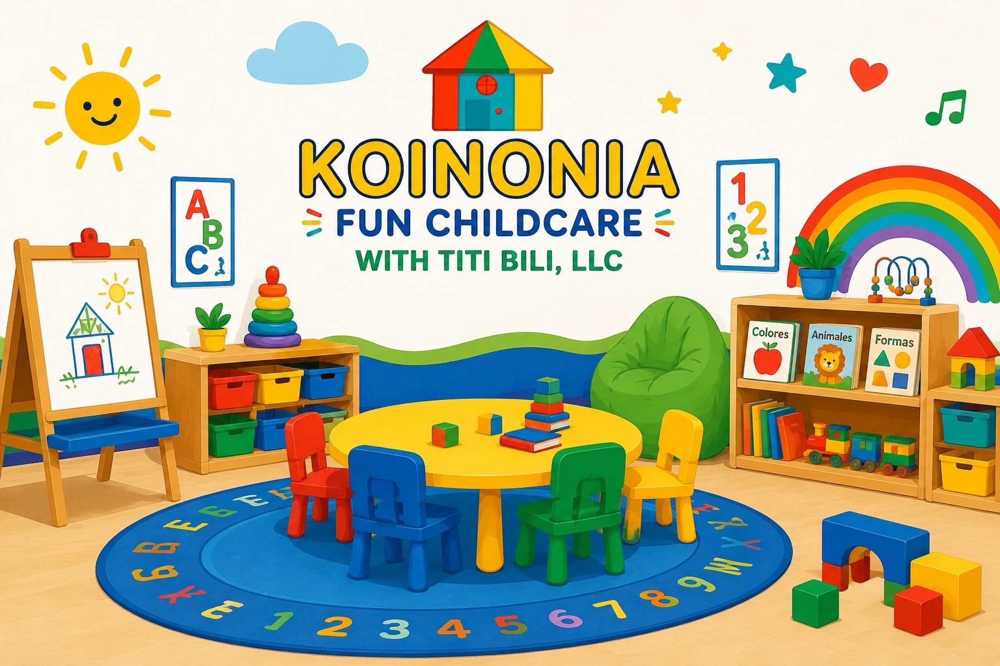

Señales de que tu Hijo Está Listo para Preescolar
Cada niño se desarrolla a su propio ritmo. Sin embargo, existen algunas señales comunes que pueden indicar que está preparado para comenzar la experiencia del preescolar y beneficiarse de nuevas oportunidades de aprendizaje y socialización.

1. Muestra curiosidad por aprender
Los niños listos para preescolar suelen mostrar interés por explorar, preguntar y descubrir cómo funcionan las cosas a su alrededor.
2. Sigue instrucciones simples
Poder comprender y seguir instrucciones básicas ayuda a participar en actividades grupales y rutinas diarias dentro del aula.
3. Interactúa con otros niños
Aunque no es necesario que sea completamente independiente, es positivo que muestre interés por jugar y compartir con otros niños.
4. Tolera separarse de los padres
La adaptación puede tomar tiempo, pero es útil que el niño pueda permanecer con otros cuidadores durante períodos cortos sin angustia excesiva.
5. Comunica necesidades básicas
Poder expresar hambre, sed, cansancio o necesidad de ayuda facilita una experiencia más positiva en el entorno educativo.
6. Participa en rutinas
Seguir horarios para comer, jugar o descansar demuestra una preparación importante para la estructura diaria del preescolar.
Reflexión Final
No existe una edad exacta que determine cuándo un niño está listo para preescolar. Lo más importante es observar su desarrollo individual y elegir un programa que apoye sus necesidades y fortalezas.
¿Buscas un programa preescolar en West Haven?
En Koinonia Fun Childcare ayudamos a los niños a desarrollar confianza, independencia y habilidades para una transición exitosa al preescolar.